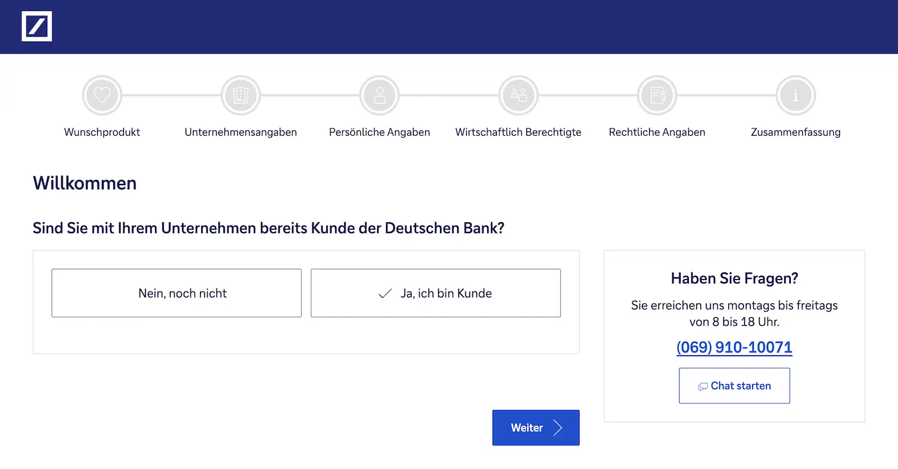

Das Wichtigste: Deutsche Bank Geschäftskonto
- 3 Tarife: Basic (14,90 €), Classic (24,90 €) und Premium (39,90 €). Ab rund 60 Buchungen wird Classic meist günstiger als Basic.
- Buchungsgebühren: 0,30 € im Basic, 0,20 € im Classic und 0,10 € im Premium; beleghafte Buchungen kosten 3,00 €.
- Einlagensicherung: gesetzlich bis 100.000 € (EdB), zusätzlich freiwilliger Schutz über den Bankenfonds.
- Bargeld ist möglich: Ein- und Auszahlungen laufen über Filialen; Abhebungen auch im Cash-Group-Netz.
- Stärken: persönliche Beratung, Finanzierungslösungen und breite Abdeckung vieler Rechtsformen.
- Gründerkonto: im ersten Jahr 0 € Grundpreis für Neugründer innerhalb der ersten 12 Monate.
Für wen ist das Deutsche Bank Geschäftskonto geeignet — und für wen nicht?
Am besten passt die Deutsche Bank zu Unternehmen mit Wunsch nach persönlicher Beratung, Bargeldservices und Filialzugang. Freelancer und Solo-Selbstständige mit wenigen Buchungen zahlen dagegen vergleichsweise viel: 14,90 €/Monat, keine Freiposten. Für sie lohnen sich oft günstigere Alternativen.
- Etablierte KMU & Mittelstand — Beratung, Kredite und breites Leistungsspektrum
- Bargeldintensive Branchen — Einzahlungen sind über Filialen möglich
- Unternehmen mit Kreditbedarf — Dispo, Wachstumsfinanzierung und KfW-Optionen
- Gründer im 1. Jahr — Gründerkonto mit 0 € Grundpreis
- Freelancer mit wenig Buchungen — Grundpreis plus Buchungsgebühren sind relativ hoch
- Reines Online-First-Banking — weniger modern als viele Fintech-Alternativen
- Preisfokussierte Unternehmen — digitale Anbieter sind oft günstiger
- Unternehmen mit Bedarf an Rechnungstools — kein integriertes Rechnungs-Setup
Deutsche Bank Geschäftskonto: Rechtsformen
Die Deutsche Bank nennt für die Online-Beantragung ausdrücklich Gewerbetreibende und Freiberufler als natürliche Personen sowie alle gängigen Rechtsformen für juristische Personen. Ist eine Rechtsform in der Antragsstrecke nicht auswählbar, verweist die Bank auf den Filialprozess.
| Rechtsform | Status | Unterlagen / Hinweis |
|---|---|---|
| Gewerbetreibende & Freiberufler (natürliche Personen) | Online möglich |
|
| Alle gängigen Rechtsformen für juristische Personen | Online möglich |
|
| Besondere oder in der Antragsstrecke nicht auswählbare Rechtsformen | Bitte anfragen |
|
Deutsche Bank Geschäftskonto: Kosten & Konditionen
Die folgende Übersicht basiert auf den offiziellen Angaben der Deutschen Bank, geprüft am 6. Juni 2026. Die letzte Preiserhöhung trat am 1. April 2025 in Kraft.
| Konditionen | Business BasicKonto | Business ClassicKonto | Business PremiumKonto |
|---|---|---|---|
| Monatliche Grundgebühr | 14,90 € | 24,90 € | 39,90 € |
| Beleglose Buchung | 0,30 € / Posten | 0,20 € / Posten | 0,10 € / Posten |
| Beleghafte Buchung | 3,00 € / Posten | 3,00 € / Posten | 3,00 € / Posten |
| Freiposten inkl. | 0 (keine) | 0 (keine) | 0 (keine) |
| SEPA-Echtzeitüberweisung | Ja | Ja | Ja |
| Debitkarte (DB Card) | 1 inklusive | bis zu 2 inklusive | bis zu 2 inklusive |
| Business Kreditkarte | Nicht inkl. (29 €/J.) | 1 kostenlos inkl. | 2 kostenlos inkl. |
| Unterkonto | nicht ausgewiesen | nicht ausgewiesen | 1 ohne Grundpreis |
| Bargeldabhebung Inland | Cash Group nutzbar Buchungsposten können anfallen |
Cash Group nutzbar Buchungsposten können anfallen |
Cash Group nutzbar Buchungsposten können anfallen |
| Bargeldeinzahlung | Möglich (Filiale) | Möglich (Filiale) | Möglich (Filiale) |
| Online-Banking / App | Inkl. | Inkl. | Inkl. |
| DATEV-Schnittstelle | Verfügbar | Verfügbar | Verfügbar |
| Kontokorrentkredit | Bonitätsabhängig | Bonitätsabhängig | Bonitätsabhängig |
| Optimale Buchungszahl | Bis ca. 60/Mon. | 60–280/Mon. | Ab 280/Mon. |
| Jahreskosten (40 Buchungen) | ca. 253 €/J. | ca. 248 €/J. | ca. 392 €/J. |
| Konto eröffnen | BasicKonto → | ClassicKonto → | PremiumKonto → |
Deutsche Bank Geschäftskonto: Vor- und Nachteile
Stärken hat die Deutsche Bank bei Service, Sicherheit und klassischen Bankleistungen. Bei Preis und digitalen Features ziehen spezialisierte Fintechs wie Qonto oder Holvi oft vorbei — besonders für kleine Unternehmen und Freelancer.
- Viele Rechtsformen möglich, auch für komplexere Unternehmen
- Bargeldservice über Filialen und Cash Group
- Persönliche Beratung für komplexere Finanzthemen
- Finanzierungslösungen wie Kreditlinien und KfW-Vermittlung
- Gründerkonto im 1. Jahr gratis bei passendem Modell
- Keine Freiposten — jede Buchung kostet extra
- Basic ohne Kreditkarte — 29 €/Jahr zusätzlich
- Für Freelancer oft teuer — ab 14,90 €/Monat
- Kein integriertes Rechnungstool wie bei vielen Fintechs
- Unterkonten teils nur gegen Aufpreis
Funktionen & Features im Detail
Das Grundprinzip ist klassisches Filialbank-Banking mit digitaler Ergänzung. Integrierte Rechnungstools oder Ausgabensteuerung wie bei Fintechs gibt es nicht. Dafür bietet die Bank Kredite, Factoring und persönliche Finanzierungsberatung.
Online-Banking & App
Online-Banking umfasst Überweisungen, Kontoübersicht und Dokumentenverwaltung per digitalem Postfach. Apple Pay und Google Pay sind eingebunden; weitere Konten lassen sich zusätzlich einbinden.
Electronic Banking Lösungen
Für größere Unternehmen stehen Electronic-Banking-Lösungen bereit, darunter die Datenschnittstelle für das Steuerbüro, EBICS und Buchhaltungspartner. Konkrete Zusatzkosten sollten direkt mit der Bank geklärt werden.
Unterkonten & Struktur
Unterkonten sind grundsätzlich möglich. Im PremiumKonto ist ein zusätzliches Unterkonto ohne Grundpreis enthalten; weitere Konditionen stehen im Preis- und Leistungsverzeichnis. Wer viele Budgettöpfe braucht, sollte auch softwareorientierte Anbieter vergleichen.
Deutsche Bank Geschäftskonto: Karten
Im BasicKonto ist eine Deutsche Bank Card (Debit) inklusive. Ab dem ClassicKonto kommt eine BusinessCard (Kredit) dazu, im PremiumKonto sind es zwei. Apple Pay und Google Pay funktionieren mit beiden Kartentypen.
| Kartentyp | BasicKonto | ClassicKonto | PremiumKonto |
|---|---|---|---|
| DB Card (Debit) | 1 inklusive | bis zu 2 inklusive | bis zu 2 inklusive |
| Business Kreditkarte | Nicht inkl. (29 €/J.) | 1 kostenlos inkl. | 2 kostenlos inkl. |
| Apple Pay / Google Pay | Verfügbar | Verfügbar | Verfügbar |
| Kontaktloses Zahlen | Ja (NFC) | Ja (NFC) | Ja (NFC) |
| Virtuelle Karten | nicht ausgewiesen | nicht ausgewiesen | nicht ausgewiesen |
Deutsche Bank Geschäftskonto: Bargeld & Abhebungen
Bargeld einzahlen und abheben ist bei der Deutschen Bank möglich. Für Gastronomie, Einzelhandel und Handwerk ist das ein klarer Vorteil gegenüber reinen Online-Konten.
| Leistung | BasicKonto | ClassicKonto | PremiumKonto |
|---|---|---|---|
| Bargeldeinzahlung | Möglich in der Filiale | Möglich in der Filiale | Möglich in der Filiale |
| Bargeldabhebung Deutschland | Cash Group als Buchungsposten erfasst |
Cash Group als Buchungsposten erfasst |
Cash Group als Buchungsposten erfasst |
| Internationale Abhebungen | bei Kooperationspartnern in über 60 Ländern | bei Kooperationspartnern in über 60 Ländern | bei Kooperationspartnern in über 60 Ländern |
| Nicht-Euro-Abhebungen | Währungsumrechnungsentgelt | Währungsumrechnungsentgelt | Währungsumrechnungsentgelt |
DATEV, Lexoffice & Buchhaltungsintegration
Ein natives Buchhaltungstool gibt es nicht. Die Bank bietet eine Datenschnittstelle für das Steuerbüro und EBICS; alles Weitere läuft über externe Partnerlösungen.
DATEV-Schnittstelle
Im Gründerkonto ist Buchhaltung inklusive. In den regulären Tarifen sollten Freischaltungen und Kosten direkt mit der Bank geklärt werden.
Weitere Softwareintegrationen
Über die Plattform „Mehr als Banking“ und weitere digitale Kooperationen verweist die Deutsche Bank auf externe Buchhaltungspartner wie sevdesk. E-Rechnungsformate wie ZUGFeRD oder XRechnung werden nicht nativ durch das Konto erzeugt — hierfür ist ein externes System nötig.
Einlagenschutz & Regulierung bei der Deutschen Bank
Die Deutsche Bank AG ist eine deutsche Vollbank und als Kreditinstitut durch BaFin und Europäische Zentralbank (EZB) beaufsichtigt. Kundenguthaben sind bis 100.000 € gesetzlich geschützt; zusätzlich besteht eine freiwillige Absicherung über den Einlagensicherungsfonds des Bundesverbandes deutscher Banken.
| Status | Kreditinstitut / Vollbank |
| Aufsicht | BaFin und Europäische Zentralbank (EZB) |
| Gesetzliche Einlagensicherung | Bis 100.000 € über die EdB |
| Zusätzlicher Schutz | Einlagensicherungsfonds des Bundesverbandes deutscher Banken |
Das Deutsche Bank Gründerkonto im Detail
Das Gründerkonto richtet sich an Neugründer, deren Start nicht länger als zwölf Monate zurückliegt. Im ersten Jahr fällt keine Grundgebühr an.
Was ist im ersten Jahr vorgesehen?
Im ersten Jahr ist ein Starterpaket aus Geschäftskonto, Buchhaltung und persönlicher Beratung vorgesehen. Welche Leistungen konkret freigeschaltet sind, klärt sich am besten direkt mit der Bank.
Für welche Rechtsformen gilt das Gründerkonto?
Das Gründerkonto funktioniert für die meisten gängigen Unternehmensformen. Bei GmbH- und UG-Gründungen, besonders bei notwendiger Stammkapitaleinzahlung, lohnt ein kurzer Anruf zur Abstimmung des genauen Ablaufs. Eine Übersicht aller Rechtsformen gibt es im Rechtsformen-Block weiter oben.
Deutsche Bank Geschäftskonto eröffnen — Schritt für Schritt
Die Kontoeröffnung läuft online in drei Schritten. Die Identifikation erfolgt per VideoIdent (WebID) oder PostIdent. Je nach Rechtsform und Unterlagen kann zusätzlicher Abstimmungsbedarf entstehen.
- Kontomodell auswählen: Basic-, Classic- oder PremiumKonto (oder Gründerkonto) auf der Deutsche Bank Website auswählen und Formular starten
- Persönliche Daten eingeben: Unternehmensdaten, Rechtsform, Gesellschafter, steuerliche Angaben und Kontaktdaten im Online-Formular ausfüllen
- Unterlagen hochladen: Je nach Rechtsform — Gewerbeanmeldung, Handelsregisterauszug, Gesellschaftervertrag, Gesellschafterliste oder Steueridentifikationsnummer
- Identitätsprüfung: Video-Ident über WebID oder Post-Ident (aktuell: 1 Person pro Online-Antrag; weitere Zeichnungsberechtigte erfordern Filialbesuch)
- Prüfung und Freischaltung: Nach erfolgreicher Legitimation und Prüfung der Unterlagen erfolgt die weitere Freischaltung gemäß Prozess der Deutschen Bank.
Welche Unterlagen werden für die Kontoeröffnung typischerweise benötigt?
Die genauen Unterlagen hängen von der Rechtsform und der Zeichnungsberechtigung ab.
- Personalausweis oder Reisepass zur Legitimation der antragstellenden Person
- Je nach Rechtsform zusätzlich z. B. Gewerbeanmeldung, Steueridentifikation oder gesellschaftsbezogene Unterlagen
- GbR, UG oder GmbH meist mit Gesellschafterangaben, Vertretungsregelung und weiteren Nachweisen zur Gesellschaft
- Registerpflichtige Unternehmen in der Regel mit Handelsregisterauszug und ergänzenden Unternehmensunterlagen

Deutsche Bank Geschäftskonto Fazit 2026
Kurzfazit: stark bei Bargeld, Filialservice, Cash-Group-Zugang und persönlicher Beratung, schwächer bei günstigen Einstiegspreisen, Freiposten und digital-first Workflows.
Besonders lohnt sich das Deutsche Bank Geschäftskonto 2026 für bargeldintensive Betriebe, für Unternehmen mit Wunsch nach Filialbetreuung und für Gründer oder Mittelständler mit Finanzierungsbedarf. Die Deutsche Bank Geschäftskonto Kosten sind transparent strukturiert, wirken ohne Freiposten für Freelancer und kleine digitale Unternehmen aber oft deutlich teurer als bei FYRST, Holvi oder Qonto.
Nicht das Richtige? Diese Alternativen könnten passen
Alle drei Anbieter haben wir ebenfalls getestet — hier die wichtigsten Unterschiede auf einen Blick.

Sinnvoll für Unternehmen mit Filialbedarf und starker Bargeldnutzung.
✓ klassische Beratung und Finanzierung
× weniger modern als Fintechs
Sinnvoll für Unternehmen mit Bargeldbedarf und Filialfokus.
✓ starke Bargeldnutzung im Alltag
× keine Low-Cost-Lösung
Spannend für preisbewusste Unternehmen mit stärkerem Digitalfokus.
✓ digitaler als Filialbanken
× Bargeld weniger direkt nutzbar
Alle Konten im großen Vergleich: Geschäftskonto-Vergleich 2026 →
Stand: 6. Juni 2026